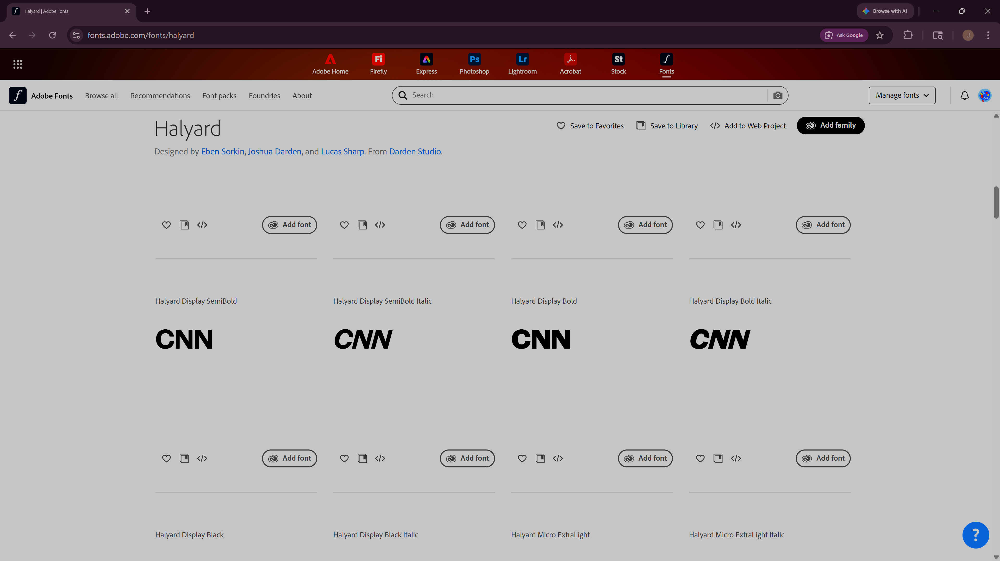
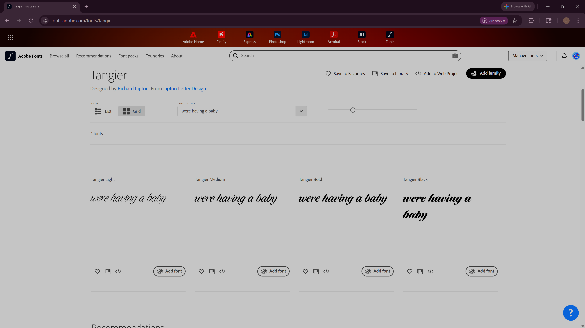

The Impact of Fonts on Emotion and Communication
Fonts play a significant role in communication around the world. Each culture has developed its own unique font styles that are woven into everyday life. The design and architecture of words, as expressed through fonts, can evoke powerful emotions and influence perception. Whether the context is political messaging, advertising for a storefront sale, or a personal event like a baby shower, the choice of font shapes how people respond and interpret the message. The display of text is crucial and will always have a substantial effect on our reactions in various situations.
Here are a few specific examples of how fonts are used to shape meaning and emotional response:
CNN (Bold Serif): This news organization uses a heavy serif font that communicates authority, reliability, and a sense of established, trustworthy news coverage.

"We're pregnant" announcements often feature romantic script fonts, modern calligraphy, or friendly, bold lettering to express joy and celebration.

Fonts chosen for "going out of business" sale signs focus on high visibility, urgency, and readability from a distance. These signs typically use bold sans-serif or thick slab-serif typefaces to ensure the message is clear and attention-grabbing.
In conclusion, fonts are a powerful tool for communication that can evoke specific emotions and influence how messages are perceived across different cultures. The choice of font can enhance the effectiveness of a message, making it more memorable and impactful. If your looking to explore fonts adobe fonts is a great resource.